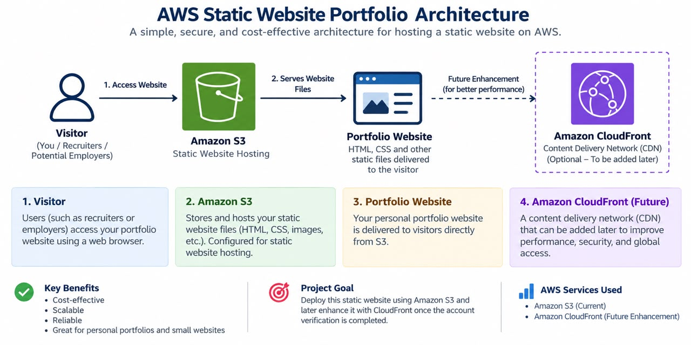

Customer Service & Administrative Professional transitioning into Cloud Computing.
I am a Customer Service and Administrative professional with experience supporting customers, coordinating administrative tasks, managing schedules, and helping teams stay organized.
I am currently transitioning into Cloud Computing and building practical skills with Amazon Web Services (AWS). I am passionate about technology, continuous learning, and using cloud solutions to solve real-world problems.
I began my journey into cloud computing by learning the fundamentals of Amazon Web Services and exploring how cloud technologies are used to build scalable and reliable solutions.
I am currently preparing for the AWS Certified Cloud Practitioner certification while developing practical projects to strengthen my understanding of AWS services.
My goal is to continue developing my cloud skills and grow into opportunities where I can combine technology, customer service, and problem-solving.
Object storage and static website hosting fundamentals.
Understanding of virtual servers and compute resources.
Understanding users, roles, policies, and permissions.
Monitoring and observing AWS resources and applications.
Infrastructure as code and automated resource deployment.
Understanding AWS billing, budgets, and cost awareness.
Designed and developed a responsive static portfolio website using HTML and CSS, with plans to deploy it using Amazon S3.
AWS Services: Amazon S3
Skills Demonstrated: Static website hosting, S3 fundamentals, cloud architecture, and AWS cost awareness.

Status: In Progress 🚀
I am open to opportunities in cloud computing, customer experience, administration, and technology.